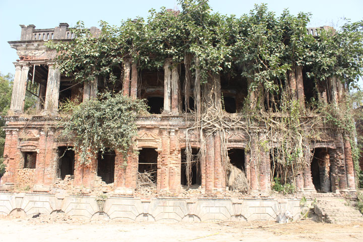
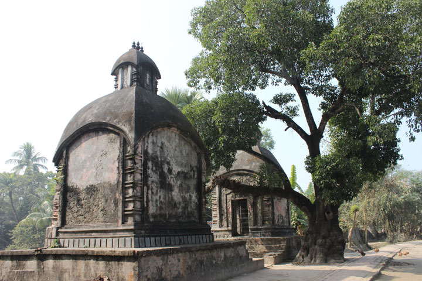
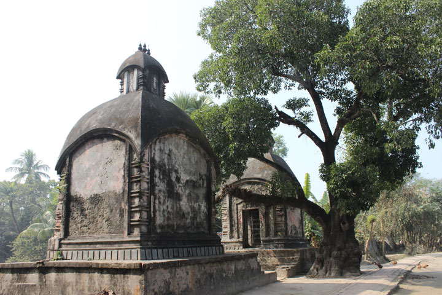
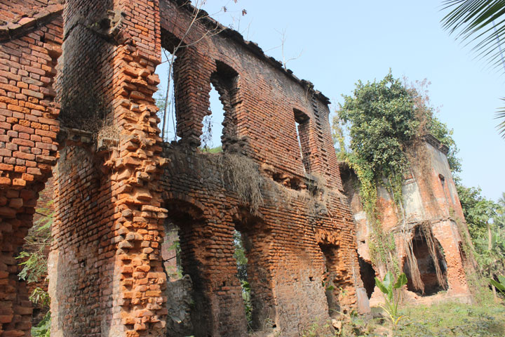

নকিপুর, শ্যামনগর শ্যামনগর বাসস্ট্যান্ড থেকে ৩ কিলোমিটার পূর্বে নকিপুরে অবস্থিত জমিদার রায় বাহাদুর হরিচরণ রায় চৌধুরীর বাসভবন, নহবতখানা ও দিঘি সংলগ্ন মন্দির।
রাজা প্রতাপাদিত্যের পর তিনিই ছিলেন শ্যামনগর অঞ্চলের জড় জমিদার। তাঁর জন্ম ১৮৬৬ ও মৃত্যু ১৯১৫ খ্রিস্টাব্দে।

এখানে রয়েছে তিন তলা বিশিষ্ঠ জমিদার বাড়ী, মন্দির, নহবতখানা, দুটি ছোট মন্দিরসহ ঘাট যদিও বেশিরভাগ ঘরই ধ্বংসের মুখে। এটি এই অঞ্চনের সবচেয়ে বড় জমিদারবাড়ী।
শ্যামনগর শহর থেকে সব ধরণের যানবাহনের এখানে যেতে পারেন এছারাও মাইক্রোবাসযোগে এখানে যাওয়া যেতে পারে। এটি শ্যামনগর সদর ইউনিয়নের মধ্যে এবং শহর থেকে মাত্র ১ কিলোমিটার দুরে অবস্থিত।